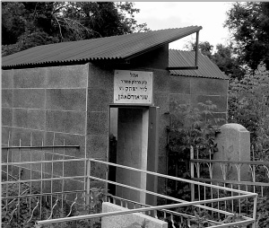

Meriting a Miracle from the Rebbe and Reb Levi Yitzchok
“We immediately went to the house and checked the mezuzos. The world uv’kumecha (when you get up) in the mezuza on my daughter’s room was faulty. Of course, we immediately changed mezuzos.” * Presented for 20 Av, the day that marks the passing of the Rebbe’s father, Rabbi Levi Yitzchok Schneersohn a”h.

“One day, I returned home from work and got out of the elevator. As I turned toward my door I was attacked by thieves. They forced me into my apartment and tied me up. Then they locked the door and began going through my belongings.
“I knew that in these kinds of robberies, the victims generally did not remain alive, and yet, they did not kill me. As soon as I recovered, I called Rabbi Yeshaya Cohen, the Chief Rabbi of Kazakhstan and the Rebbe’s shliach, and I told him I wanted an aliya and to say the HaGomel blessing. R’ Cohen told me to come on Monday.
“I was familiar with R’ Cohen’s work, especially since I attended the Yomim Nora’im services in his shul and saw how devoted he is to every Jew. I admired the man and his work.
“I went on Monday and the portion that was read was about Sarah Imeinu who was told that she would become pregnant after many years of infertility. At the end of the davening, we sat down to talk. R’ Cohen told me about his work and mentioned that the grave of R’ Levi Yitzchok Schneersohn, the Rebbe’s father, is in Alma Ata.
“I confided in him that I had a daughter who was married for four years and had not yet become pregnant despite extensive medical treatment. R’ Cohen suggested that we go and pray at the gravesite.
“We went together and I saw the nice building they had put up there. We went inside and prayed and I mentioned my daughter’s name, Shirlee bas Sarah.
“When we left, R’ Cohen reminded me of the week’s parsha which tells about Sarah Imeinu becoming pregnant after many years. He promised me that we had left the matter in good hands and concluded confidently, ‘Expect good news.’
“A short while later, my daughter called me and emotionally said, ‘Abba, I have good news …’
“I am sure it is thanks to the t’filla we said at the Ohel of R’ Levi Yitzchok Schneersohn a”h.”
***
Mr. Zimmerman went on to say:
“Since I told you a story about a tzaddik that has to do with my daughter, I will tell you another story about my daughter with another tzaddik, R’ Levi Yitzchok’s son, the Lubavitcher Rebbe.
“It took place many years ago when we lived in Haifa. My daughter Shirlee was twelve. One day, she became paralyzed. Her limbs had no sensation. We had her hospitalized immediately and she was checked by the best doctors, but none of them could diagnose the cause of the paralysis. It was a bad situation. I would hold her and her arms and legs dangled in the air with no movement or reaction.
“One evening, I was sitting near her bed, feeling brokenhearted, when three bearded Chassidim walked in. A mutual friend had told them about my problem and they had come to visit. The three were: Gidi Sharon, Zohar Eisenberg, and Menasheh Altheus. They suggested that I check the mezuzos in my house.
“We immediately went to the house and checked the mezuzos. The world uv’kumecha (when you get up) in the mezuza on my daughter’s room was faulty. Of course, we immediately changed mezuzos.
“That same night we called the Rebbe’s office and spoke to the secretary, R’ Groner. I told him the story and he told me he would give her name and the details to the Rebbe and ask for a bracha. One of the three then said that now we needed a l’chaim. He said in full confidence: We checked the mezuzos, located the problem, and informed the Rebbe, and now everything will be fine.
“The very next day, I went to the hospital and Shirlee walked toward me as the entire department stood there and wept. The doctors, the nurses, the patients, and now, as I tell the story, I’m also crying. It was such an emotional moment.”
Menachem Ziegelboim. "Meriting a Miracle from the Rebbe and Reb Levi Yitzchok." Beis Moshiach, no. 889 (July 25, 2013).